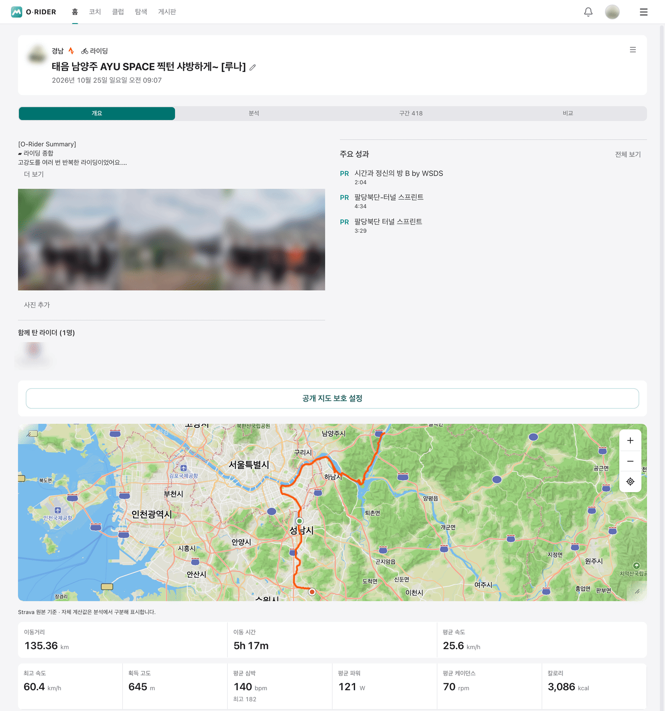
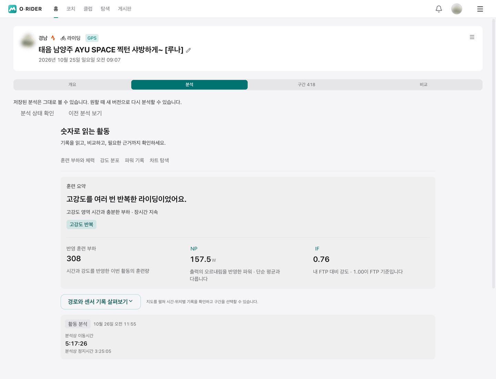
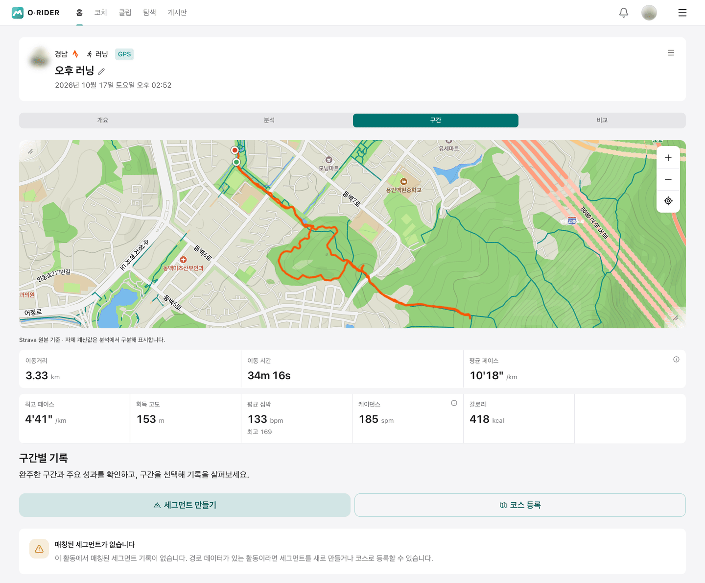
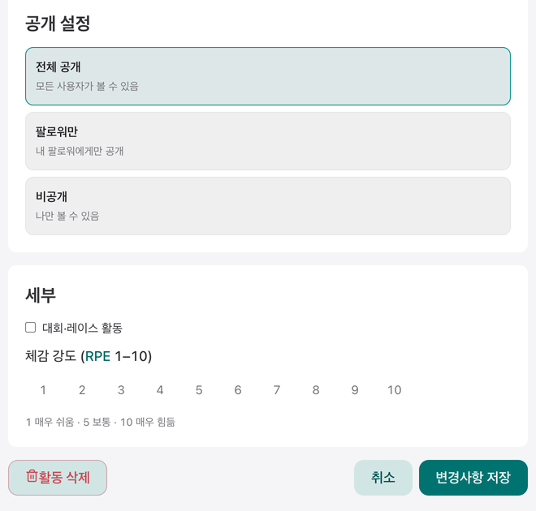

3. 활동 분석 — 사이클·러닝
이 장에서 할 수 있는 것
- 활동 하나를 열어 메모 · 사진 · 동영상 · 지도와 거리 · 시간 · 속도(페이스) · 심박 · 파워를 읽습니다.
- 개요 · 분석 · 구간 · 비교 탭으로 더 깊이 들어가고, 러닝은 랩별 페이스를 봅니다.
- 활동 관리 메뉴에서 성과 카드 저장 · 내보내기 · 편집 · 공개 범위 · 삭제를 합니다.
3.1 활동 상세 열기

따라 하기
- 홈 피드나 운동일지에서 활동을 누릅니다.
- 맨 위 카드에서 올린 사람, 기록 출처(오라이더 · Strava), 종목(라이딩 · 러닝 등), 활동 이름, 날짜와 시각을 확인합니다. GPS 경로가 있으면 GPS 표시가, 속도가 비현실적이면 ⚠ 데이터 이상 표시가 붙습니다.
- 그 아래 개요 · 분석 · 구간 · 비교 탭으로 볼 내용을 고릅니다(3.3). 처음에는 개요 탭이 열립니다.
맨 위 카드의 버튼
| 버튼 | 하는 일 |
|---|---|
| 활동 이름 옆 연필 | 활동 이름을 그 자리에서 바로 고칩니다(내 활동만). |
| 오른쪽 끝 메뉴(가로줄 세 개) — 활동 관리 | 눌러서 여는 창입니다. 누구나: 성과 카드 저장 · 내보내기, Strava에서 가져온 활동이면 Strava에서 확인. 내 활동이면 여기에 활동 정보 편집, 공개 범위(전체 공개 · 친구 · 팔로워 · 비공개), 삭제가 더해집니다. |
3.2 지표 카드 읽기 (사이클)
개요 · 구간 · 비교 탭에서 핵심 기록 카드가 보입니다(분석 탭에서는 숨겨집니다). 휴대폰에서는 개요 탭 맨 위에 핵심 기록으로 먼저 나옵니다. 기본으로 이동거리 · 시간 · 평균 속도가 보이고, 나머지는 추가 기록 보기를 펼치면 나옵니다.
| 카드 | 읽는 법 |
|---|---|
| 이동거리 | 실제로 움직인 거리(km) |
| 이동 시간 | 멈춘 시간을 뺀 시간. 신호 대기·휴식이 길었다면 전체 경과 시간보다 짧습니다. 이동 시간을 알 수 없으면 총 활동시간이 대신 나옵니다. |
| 평균 속도 · 최고 속도 | 평균 속도는 이동 시간 기준(km/h)이라 멈춘 시간이 섞이지 않습니다. 아래 작은 글씨 "이동 평균 · 전체 ○○ km/h"는 멈춘 시간까지 넣은 평균입니다. |
| 획득 고도 | 오른 높이의 합. 아래 작은 글씨는 내려간 높이(하강)입니다. 같은 거리라도 고도가 높으면 더 힘든 코스입니다. |
| 평균 심박 | 아래 작은 글씨로 최고 심박이 함께 나옵니다. |
| 평균 파워 | 페달에 실은 힘(W). 아래 작은 글씨는 NP(정규화 파워)입니다. 파워미터가 없으면 속도·경사·체중으로 추정한 가상 파워일 수 있습니다. |
| 평균 케이던스 | 분당 페달 회전수(rpm) |
| TSS | 이 라이딩의 훈련 부하(3.5) |
| 칼로리 | 쓴 에너지(kcal). 보급 계획의 참고값입니다. |
3.3 탭으로 더 깊이 보기

맨 위 카드 아래에 개요 · 분석 · 구간 · 비교 탭이 있습니다. 비교는 내 활동에서만 보입니다. 활동에 어떤 데이터가 있는지에 따라 탭 안의 카드가 달라집니다.
| 탭 | 보이는 것 |
|---|---|
| 개요 | 활동 이야기(메모) · 사진과 동영상 · 함께 탄 라이더 · 주요 성과(세그먼트 PR·KOM 상위 3개, 전체 보기를 누르면 구간 탭으로), 경로 지도와 핵심 기록, 좋아요·댓글, AI 분석 카드 |
| 분석 | 제목 "숫자로 읽는 활동"과 바로가기(훈련 부하와 체력 · 강도 분포 · 파워 기록 · 차트 탐색). 사이클은 훈련 요약 아래로 주제별 묶음(훈련 부하와 체력 · 강도 분포와 고강도 · 파워 기록과 최고 노력 · 심박·페달링 효율 · 회복·에너지 · 속도·지형)이 이어지고, 러닝은 활동 해석과 러닝 전용 카드(3.7), 상세 지표와 근거가 나옵니다. |
| 구간 | 제목 "구간별 기록". 랩 분석 표, 함께 탄 라이더, 주요 성과와 이 활동이 지난 세그먼트 기록(지도에서 보기), 세그먼트 만들기 · 코스 등록 · 이 경로로 라이드 버튼. 매칭된 세그먼트가 없으면 "매칭된 세그먼트가 없습니다"가 나옵니다. |
| 비교 | 제목 "이전 활동과 비교". 같은 종목의 과거 활동을 골라 거리 · 속도 · 운동 강도의 변화를 나란히 봅니다. |
개요 탭 — 메모 · 사진 · 동영상
- 메모: 직접 쓴 설명이 길면 접혀 있다가 펼칠 수 있습니다. 쓴 메모가 없는 오라이더 활동에는 서버가 저장해 둔 기본 요약이 대신 나오며, "○○에 생성된 요약입니다. 현재 분석과 다를 수 있어요." 안내가 붙습니다. 내 오라이더 활동은 라이딩 본문 작성·수정으로 본문을 쓰고 저장합니다(피드 반영에는 잠시 걸릴 수 있습니다).
- 사진 · 동영상: 최대 5장이 한 줄로 보이고, 더 있으면 마지막 칸에 "+N"이 붙습니다. 누르면 전체 화면 보기로 열려 이전·다음 사진, 확대·축소를 할 수 있습니다. 동영상은 재생 버튼과 길이가 표시되고, 전체 화면에서 재생 · 일시정지 · 소리 켜기/끄기를 합니다. 사진에 위치가 있으면 사진 위치를 지도에서 보기로 지도의 그 지점으로 갑니다.
- 사진 추가(내 활동): 사진 아래 버튼으로 올립니다. 내가 올린 사진은 전체 화면 보기에서 삭제할 수 있고, 오라이더 활동은 대표사진으로 선택으로 피드에 쓸 대표사진을 정합니다.
- 사진이 아직 안 보이면 사진 더 불러오기를, 로그인하지 않았다면 로그인하여 사진 확인을 누릅니다.
분석 탭 — 차트 다루기
- 사이클은 지도와 차트가 접혀 있습니다. 경로와 센서 기록 살펴보기를 누르면(또는 바로가기의 차트 탐색) 지도와 고도 & 성능 분석 차트가 펼쳐집니다. 러닝은 처음부터 펼쳐져 있습니다.
- 차트 위에 마우스를 올리거나 손가락을 대면 그 시점의 값과 지도 위치가 함께 움직입니다. 가로축은 거리 · 시간(경과시간) 중에서 고릅니다.
- 그래프를 드래그하면 그 구간만 확대되고 선택 구간의 관측 평균·최고가 나옵니다. 키보드로는 화살표로 위치를 옮기고 Shift+화살표로 범위를 고르며, Escape로 전체 범위 복원을 합니다.
- 선택 구간의 값은 원시 기록에서 바로 낸 것이라 저장된 전체 활동 지표와 다를 수 있습니다. 전체 분석 숫자는 바뀌지 않습니다.
분석 탭 — 저장된 분석과 새 분석
분석 탭 맨 위에는 "저장된 분석은 그대로 볼 수 있습니다. 원할 때 새 버전으로 다시 분석할 수 있습니다." 안내와 함께 저장 버전 · 최신 버전이 나옵니다. 내 활동은 분석 상태 확인을 누른 뒤, 새 버전이 있으면 새 버전으로 다시 분석을 누릅니다. 완료 전까지는 저장된 분석이 그대로 보입니다. 이전 분석 보기로 예전 버전을 열어 보고, 현재 분석으로 돌아가기로 돌아옵니다.
3.4 심박 — "얼마나 힘들었나"
심박 센서·워치 기록이 있으면 핵심 기록에 평균 심박이 나오고, 분석 탭에서 강도 분포를 볼 수 있습니다.
| 지표 | 읽는 법 |
|---|---|
| 평균 심박 | 같은 종목·비슷한 코스의 이전 기록과 견줄 강도 참고값 |
| 최고 심박 | 가장 힘들었던 순간 — 오르막 꼭대기, 막판 스퍼트 등 |
| 심박 존 분포 | 사이클은 분석 탭 강도 분포와 고강도, 러닝은 심박수 카드에서 봅니다. 존 1~2가 많으면 회복·지구력, 존 4~5가 많으면 고강도 운동입니다(6.6). |
3.5 사이클 파워 — "실제로 얼마나 밟았나"
분석 탭 맨 위 훈련 요약에 반영 훈련 부하 · NP · IF가 한 줄씩 뜻과 함께 나옵니다.
| 지표 | 읽는 법 |
|---|---|
| 평균 파워 | 바람·경사와 상관없이 실제로 낸 힘의 평균 |
| NP (정규화 파워) | 출력의 오르내림을 반영한 "몸이 느낀" 파워. 평균 파워보다 많이 높으면 강약이 큰 라이딩입니다. |
| IF (강도 계수) | 내 FTP 대비 강도(1.00 = FTP와 같은 강도) |
| TSS (훈련 스트레스) · 반영 훈련 부하 | 이 라이딩이 준 훈련 부하. 시간이 길고 강할수록 커집니다. "반영 훈련 부하"는 체력·피로 계산에 실제로 넣은 값이고, "분석 TSS"는 이 활동에 저장된 상세 분석값입니다. 둘이 다르면 부하 지표 안내가 함께 나옵니다. |
파워 기록과 최고 노력
- 시간별 최고 파워: 각 시간 동안 가장 높게 유지한 평균 출력입니다. 내 활동은 나의 최근 90일 최고 파워와 비교에서 지속시간별로 최근 90일 최고와 견줍니다.
- 최고 노력 자세히 보기: 실측 파워로 확정된 최고 1·2·5분 구간의 평균·최고 파워 · 심박 · 케이던스를 비교합니다. 20분 최고 출력에서 같은 시간 구간 분석하기를 누르면 차트가 그 20분으로 맞춰집니다.
3.6 랩·스플릿 — 구간별 페이스
구간 탭의 랩 분석 표에서 랩마다 시간 · 거리 · 파워(% FTP) · 심박 · 케이던스를 봅니다. 랩을 시간축에 연결할 수 있으면 구간 보기로 지도·차트의 그 구간을 엽니다.
- 앞 랩이 빠르고 뒤 랩이 느리면 — 처음에 너무 세게 출발했을 수 있습니다.
- 랩 시간이 고르면 — 힘 배분이 잘 된 운동입니다.
- 특정 랩만 느리면 — 오르막·맞바람·신호 대기 같은 그 구간의 사정을 확인합니다.
3.7 러닝 상세 — 평균에서 구간으로

러닝 활동을 열면 지표 카드가 페이스 기준으로 바뀝니다. 카드의 ⓘ를 누르면 그 지표의 뜻이 나옵니다.
| 카드 | 읽는 법 |
|---|---|
| 평균 페이스 | 1km에 걸린 시간(분/km). 5'00"/km가 6'00"/km보다 빠릅니다. 이동 시간 기준입니다. |
| 최고 페이스 | 가장 빨랐던 순간의 페이스 |
| 평균 심박 | 아래 작은 글씨로 최고 심박이 함께 나옵니다. |
| 케이던스 | 분당 걸음 수(spm). 자전거의 페달 회전수(rpm)와 다른 값입니다. 기기에 따라 한쪽 발 걸음만 세어 90 안팎으로 나올 수 있습니다(양발 기준은 그 두 배). |
| 러닝 파워 | 기기가 러닝 파워를 기록했을 때만 나옵니다. |
| 심박 기반 러닝 부하 | 기록 심박으로 계산한 이 러닝의 훈련 부하. 임계 페이스 기반 rTSS와는 다른 값입니다. |
구간을 읽는 순서
- 분석 탭 위쪽의 기록 갱신 소식과 쉬운 말 해석으로 이번 러닝의 성격을 먼저 봅니다.
- 페이스 프로필(랩별 페이스 추이)로 전반·후반 흐름을 봅니다.
- 랩별 페이스 표에서 랩마다 페이스 · 심박 · 케이던스 · 존을 봅니다. 가장 빠른 랩에 ★가 붙습니다. 이 카드들은 분석 탭과 구간 탭에 함께 나옵니다.
- 구간 탭의 랩 분석에서 랩마다 기록 시간 · 이동거리 · 페이스 · 심박 · 케이던스를 봅니다. 저장된 랩 시각과 기록이 연결되지 않는 랩은 위치를 표시하지 않습니다.
- 언덕이 많았다면 지형 보정 페이스 (GAP) 카드를 봅니다. "평지였다면 이 정도 페이스"라는 추정값입니다.
분석 탭에는 이 밖에 환경(기온·습도·바람 등)과 장비(러닝화 누적 거리) 카드가 데이터가 있을 때 나옵니다. GPS 끊김, 짧은 거리, 신호 대기는 페이스를 흔듭니다. 값이 없는 칸은 실패가 아니라 원본에 그 값이 없다는 뜻입니다.
3.8 활동 편집 · 공개 범위 · 삭제

따라 하기
- 내 활동 상세 맨 위 메뉴를 눌러 활동 관리 창을 열고 활동 정보 편집을 누릅니다.
- 필요한 칸을 고치고 변경사항 저장을 누릅니다. 저장하면 활동 상세로 돌아갑니다.
| 항목 | 내용 |
|---|---|
| 기본 정보 | 활동 이름, 설명, 사용한 자전거(러닝은 사용한 러닝화) |
| 시작 일시 | 날짜·시각을 달력·시계 아이콘으로 바로잡습니다. |
| 운동 유형 | 미지정 · 오래 꾸준히 · 리듬 유지 · 고강도 반복 · 회복 위주 · 실전 경기 · 출퇴근 |
| 공개 설정 | 전체 공개 · 팔로워만 · 비공개 중 하나. "팔로워만"은 친구 공개와 같습니다(10.1 대응표). |
| 세부 | 대회·레이스 활동 표시, 체감 강도(RPE 1–10) |
공개 범위만 빨리 바꾸기
활동 관리 창의 공개 범위에서 전체 공개 · 친구 · 팔로워 · 비공개 중 하나를 누르면 바로 적용됩니다("공개 범위를 변경했습니다.").
공개 지도 보호 · 지도 썸네일
내 활동의 개요 탭에는 공개 지도 보호 설정 버튼이 있습니다.
- 버튼을 눌러 지금 설정(시작 반경 · 종료 반경)과 현재 공개 범위에 보이는 지도를 확인합니다.
- 시작 지점 보호 반경 (m) · 종료 지점 보호 반경 (m)에 0~5,000을 넣고 변경 미리보기를 누릅니다.
- 미리보기가 괜찮으면 이 설정 저장을 누릅니다. 다시 지나는 구간도 가려지며, 공개 지도에는 가장 긴 안전 구간만 남습니다. 내 원본 분석은 그대로입니다.
피드의 지도 썸네일은 이 활동을 처음 본 사람의 화면에서 만들어집니다. 모양이 이상하면 같은 창 아래 지도 썸네일 다시 만들기로 지금 화면에서 새로 만듭니다("새 썸네일로 바꿨습니다."). 보호 반경 때문에 공개 지도가 없는 활동에는 이 버튼이 나오지 않습니다.
삭제
3.9 좋아요 · 댓글 · AI 분석 · 활동으로 만들기
좋아요 · 댓글
- 개요 탭 아래에서 좋아요를 누르거나 댓글을 등록합니다. 로그인하지 않아도 댓글은 읽을 수 있습니다. 받은 좋아요·댓글은 내 활동 아래에 쌓입니다.
- 내 댓글은 수정 · 삭제, 남의 댓글은 신고할 수 있습니다. 내 활동에 달린 댓글은 숨김으로 모두에게서 가리고 다시 표시로 되돌립니다.
AI 분석 카드
라이딩·러닝 활동의 개요 탭 아래에 🤖 AI 라이딩 분석(러닝은 🤖 AI 러닝 코칭) 카드가 있습니다.
- 내 활동은 분석시작을 누르면 15~30초 뒤 분석 요약과 🩺 코치 처방, 구간별 분석이 나옵니다.
- 분석은 만든 시점의 기록입니다. 카드에 "분석 생성 시각"과 "분석가 ○○"(분석가 판)이 표시되며, 나중에 활동 데이터나 분석가가 바뀌어도 본문은 그대로 남습니다. 내 활동이면 카드 위 버튼이 변경사항 반영해 다시 분석 또는 새 분석가로 다시 분석으로 바뀌어 알려 주고, 바뀐 것이 없으면 다시 분석이 보입니다.
- 이전 AI 분석 보기로 예전에 만든 분석을 열어 보고, 현재 분석으로 돌아가기로 돌아옵니다. 비교 근거를 펼치면 분석을 만들 때 쓴 비교 자료를 확인할 수 있습니다.
- 남의 활동에서는 만들어 둔 분석만 볼 수 있습니다.
이 활동의 길 활용하기
3.10 자주 막히는 점
| 이럴 때 | 확인할 것 |
|---|---|
| 분석 탭이 비어 있어요 | 가져온 지 얼마 안 된 기록은 분석이 끝나야 채워집니다. 잠시 뒤 다시 여세요. 로그인하지 않았다면 상세 기록을 보려면 로그인이 필요합니다. |
| 분석 탭에 지도·차트가 안 보여요 | 사이클은 경로와 센서 기록 살펴보기를 눌러 펼칩니다. |
| IF·TSS가 이상하게 높거나 낮아요 | FTP가 실제와 맞는지, "가정값" 표시가 붙어 있는지(6.4) |
| AI 분석이 예전 내용 그대로예요 | 분석은 만든 시점의 기록입니다. 내 활동이면 카드 위 다시 분석 버튼을 누르세요. |
| 랩 분석 표가 비어 있어요 | 원본 기록에 랩 정보가 없거나, 랩 시각이 기록과 연결되지 않은 경우입니다. |
| 피드의 지도 썸네일이 이상해요 | 개요 탭 공개 지도 보호 설정을 열고 지도 썸네일 다시 만들기를 누릅니다. |
| 다른 사람에게 내 심박·파워가 보여요 | 활동 공개 범위가 아니라 설정 > 계정 > 공개 데이터 카드에서 항목을 끕니다. 끄면 기존 활동에도 적용됩니다(10.1). |
| 편집 버튼이 없어요 | 남의 활동이거나 로그인하지 않은 상태입니다. |